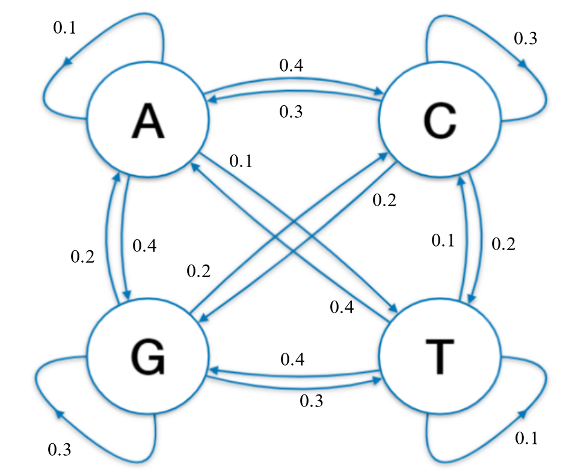

Türchen 1: Markovketten
Alooo, das erste Mini-Projekt das du heute machen kannst, geht um die Sequenz- generierung mithilfe einer einfachen Markovkette :] Alsoooo, als kleiner Recap, hier drunter siehst du das wir die 4 Zustände, passend zu den Basen haben und dazwischen die jeweiligen Wahrscheinlichkeiten:
Du kannst vllt. mal überlegen wie wir das jetzt nutzen können, um uns zufällige Sequenzen zu generieren. Und joaaa, auf der nächsten page gehts dann los :)
Markovketten - Seite 2
Also, wir können erstmal versuchen die Markovkette, in ein Format zu bringen das wir nutzen können (Maatrix, ist am einfachsten). Also, kannst du dir überlegen wie Sie aufgebaut sein muss, bzw. den Code dafür schreiben.
Tipps:
- Die Matrix muss genauso viele Spalten und Zeilen haben, wie wir Basen haben
- Man kann Matrizen mit den Befehl matrix() in R erstellen
Auf der nächsten page gibts die lösung (wooow)
Markovketten - Seite 3
Lösung:
# Matrix erstellen
markov_matrix = matrix(
c(0.1, 0.4, 0.4, 0.1,
0.3, 0.3, 0.2, 0.2,
0.2, 0.2, 0.3, 0.3,
0.4, 0.1, 0.4, 0.1),
nrow = 4, byrow = TRUE
)
# Spalten und Zeilen umbenennen damit wir sie leicher indexen können
rownames(markov_matrix) = c("A", "C", "G", "T")
colnames(markov_matrix) = c("A", "C", "G", "T")
# Schauen wie die Matrix aussieht
print(markov_matrix)
Wie du siehst, hab ich die Spalten/Zeilen Namen noch umb(anan)enannt, damit es ein bisschen verständlicher ist und man es leichter indexen kann. Wenn wir jetzt bspw. von Zustand "A" zu "A" wollen, können wir einfach markov_matrix["A","A"] zum navigieren benutzen :O. Die Wahrscheinlichkeit passt dann auch jeweils (hier 0.1)
So als nächstes müssen wir uns erstmal um die Startbase kümmern, weil uns die Markovkette keine Informationen darüber gibt. Alsooo, kannst du vielleicht kurz Code schreiben, der aus den vier Basen eine zufällig auswählt die wir zum Start nehmen.
Tipps:
- nimm die sample Funktion
- Eine gleiche Wahrscheinlichkeit für jede Base sollte passen
Und auf der nächsten Seite gibts dann wieder die Lösung (öhm, war das verständlich, ja nein ahh)
Markovketten - Seite 4
Lösung:
# Startbase zufällig bestimmen
start_base = sample(c("A", "C", "G", "T"),
size = 1,
prob = c(0.25, 0.25, 0.25, 0.25))
# Testen ob es geht
print(paste("Die Startbase ist:", start_base))
SoOoOo jetzt wird es ein bisschen schwieriger, wir wollen jetzt eine Funktion schreiben, der wir die Startbase und unsere Matrix übergeben. Darauf(hi)n soll damit die nächste Base bestimmt und zurückgegeben werden.
Tipps:
- Wir müssen uns passend zu der Startbase, die jeweilige Zeile in der Matrix auswählen (which function in R benutzen)
- Mit der Zeile können wir wieder sample() nutzen, da diese die probabilitys hat
Jooo, also auf der nächsten page ist wieder die Lösung.
Markovketten - Seite 5
Lösung:
next_base = function(current_base, markov_matrix) {
probs = markov_matrix[which(rownames(markov_matrix) == current_base), ]
base = sample(c("A", "C", "G", "T"), size = 1, prob = probs)
return(base)
}
# Funktion testen
print(next_base("A", markov_matrix))
Fast fertig, wir haben jetzt eine "Helper" Funktion gebaut die wir in einer anderen Funktion immer wieder aufrufen können, um so jetzt eine komplette Sequenz zu bauen :)
Die nächste Task ist jetzt alsoo eine neue Funktion zu schreiben, die die Startbase, die matrix und die Länge übergeben bekommt
Tipps:
- Erstell in der neuen Funktion eine Liste, die unser Startbase als erstes element hat
- Rufe die Funktion die wir gerade geschrieben haben, immer wieder mit den letzten Element der Liste auf
Markovketten - Seite 6
Lösung:
# Unsere DNA-Sequenz Erstellung aus Markovkette tolle Funktion
generate_sequence = function(start_base, length, markov_matrix) {
sequence = c(start_base)
for (i in 2:length) {
sequence[i] = next_base(sequence[i - 1], markov_matrix)
}
return(sequence)
}
# Testen mit einer Sequenz die 10 lang ist
sequence = generate_sequence(start_base, 10, markov_matrix)
print(sequence)
jup, das wars schon, hoffentlich hat alles gut geklappt und du hast was dabei gelernt und joaaaaa :], ich hab aufjedenfall nebenbei gelernt wie man so websiten aufsetzt und baut also, ich hatte spaß dabei i guess also jaa, tschauu